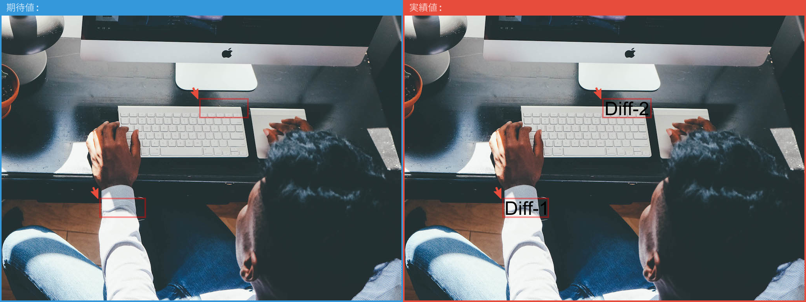
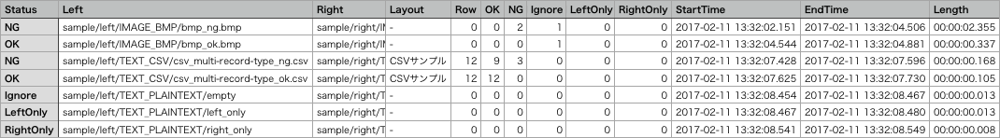

01 / TEXT
行ではなく、項目で差分を見る
比較キーで対応する行を特定し、セル単位の差分をCSVに出力。並び順が違うファイルも比較できます。
テキストも、構造化データも、画像も。期待値と実績値を一括比較し、「どこが違うか」を人にもCIにもわかる成果物へ変換します。
INPUT期待値 / 実績値
COMPAREレイアウト定義で比較
OUTPUTCSV / PNG / 終了コード
ONE TOOL, CLEAR ANSWERS
目視確認や表計算ソフトでの突合を、設定として残せるコマンドライン処理に置き換えます。
01 / TEXT
比較キーで対応する行を特定し、セル単位の差分をCSVに出力。並び順が違うファイルも比較できます。
02 / IMAGE
ピクセル差分を左右比較のPNGへ。動的な領域は除外エリアとして指定できます。

03 / BATCH
サブディレクトリを再帰的に走査。ファイル形式に応じて比較方法を切り替え、サマリーを生成します。
04 / AUTOMATION
成功 0・差分あり 3・エラー 6 の明確な終了コード。ローカルとCIで同じ比較を再現できます。
$ compare_files expected actual
Compare status: NG
File: 24 OK: 22 NG: 2
$ echo $?
3START IN ONE COMMAND
Dockerベースの実行環境、設定、全形式のサンプルをまとめてセットアップします。
curl -sSL https://raw.githubusercontent.com/scenario-test-framework/compare-files/refs/heads/master/docker/install.sh | bash

STOP EYEBALLING DIFFS.